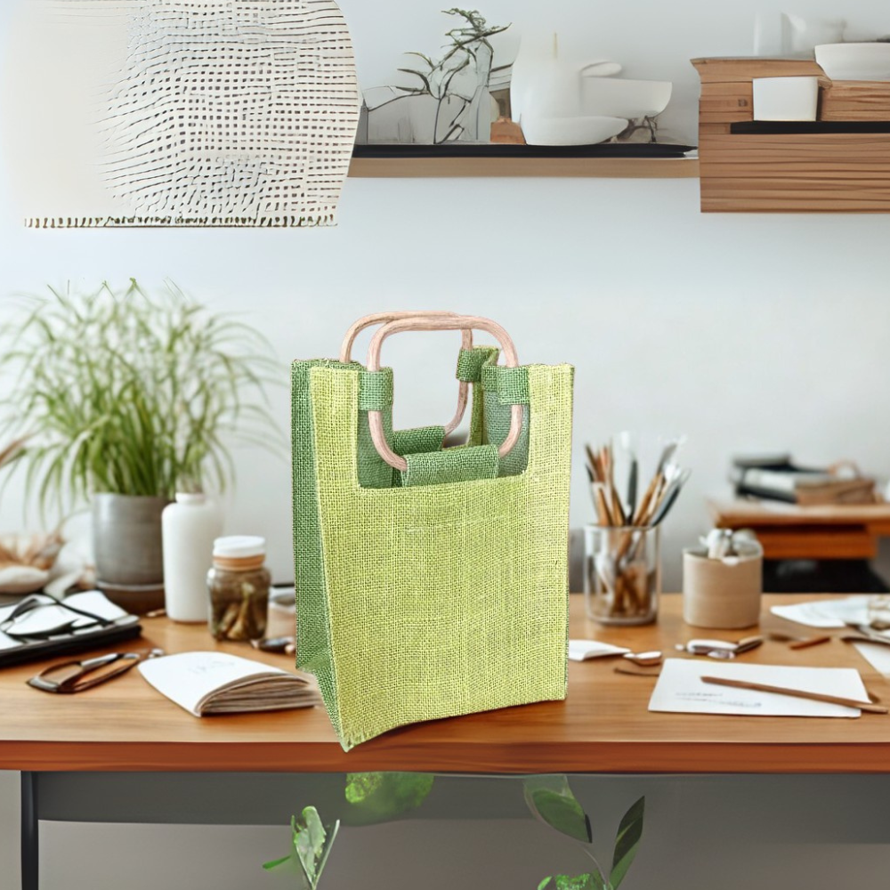
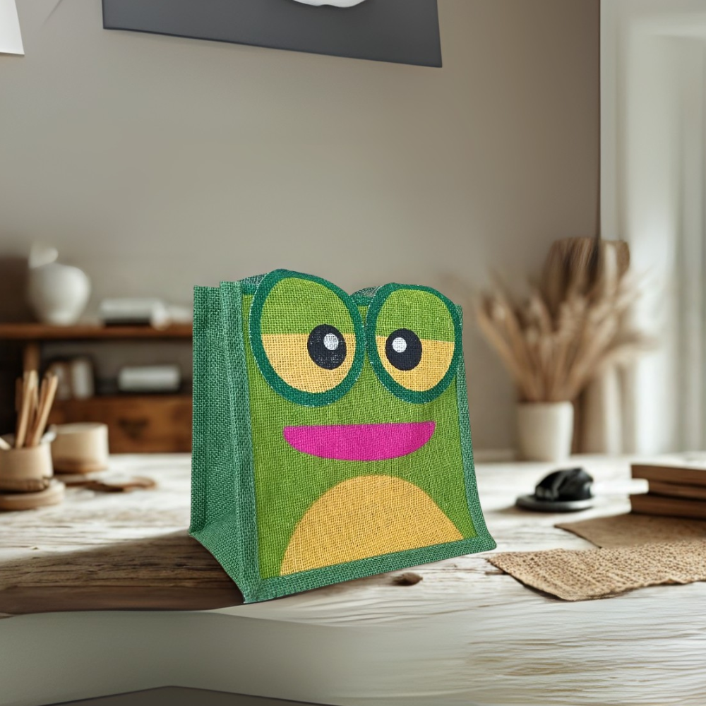
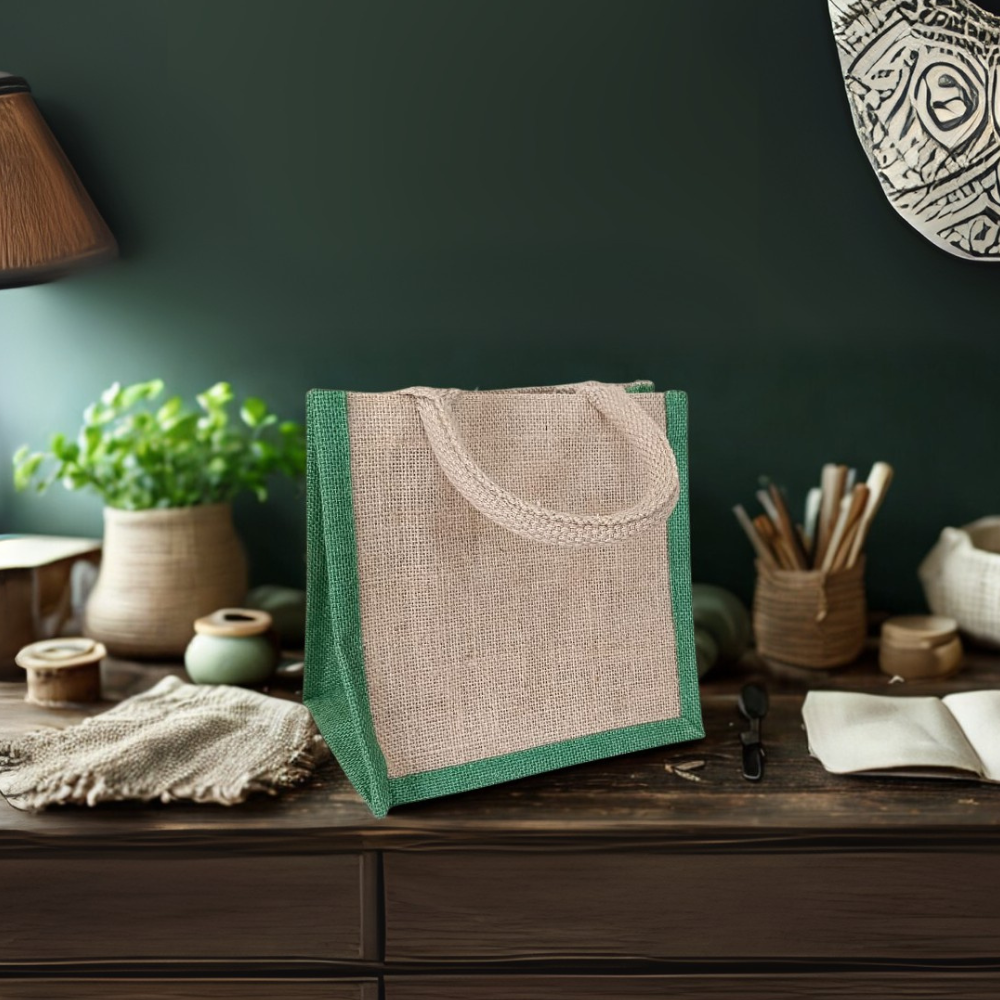

NOTE: Following is for Desktop View unless otherwise specified.
Margins
1. Margins are still too wide. Reduce to 5% as per layout below.
2. There is horizontal scrolling in Desktop, Tablet and Mobile view. REMOVE THIS.
MOBILE VIEW
1. Can you move the Logo and Menu to the the top.
Header
1. Can you format the header as above with all the navigation links. Colours for text #41a67e and #ac4425'
2. The Logo and Home navigation link will link to the Home Page. LOGO TO BE DETERMINED.
3. Navigation links will link to relevant pages. CLICK on links for examples.
4. Link hover background colour #41a67e. Contact button colours #ffc107.
5. Static Header. Can you do as for https://gojuteinternational.com/ so that the header disappears leaving more space in the body to view. Can you also include a reduced sized logo on the navigation bar on the left when this happens. I have noticed that this effect on your website works in Tablet view, but not when I orientate my mobile to landscape.
Hero Section
1. Will go with as per above. If you could suggest a better font family for the title, would be appreciated.
MOBILE VIEW
1. The header image in mobile view is too small and will need to take up a larger portion of the space.
Our Products
Explore our wide range of eco-friendly bags including Jute, Cotton, Canvas, and Recycled Paper Bags. Perfect for retailers, events, and promotional use.
View Products
Bespoke Services
We specialize in custom bag design, printing, and finishes. Choose from handles, zips, linings, and express UK printing for your brand identity.
View Services
Eco Policies
Committed to sustainability, we follow ethical sourcing, eco-friendly manufacturing, and certified standards to reduce environmental impact.
View Eco Policies
Sub Hero Section
1. This section is OK apart from following amendments.
2. Spacing and margins as per above.
3. All button colours #006f40, slightly round borders, and hover colour #41a67e.
4. Check link destinations.
Eco Bag Company
EcoBag Company is dedicated to creating high-quality, sustainable bags for businesses and consumers worldwide. Our mission is to replace harmful plastics with eco-friendly alternatives that protect the planet and promote responsible consumption.
From retailers and wholesalers to event organizers and promotional companies, we provide versatile solutions tailored to meet your needs. With bespoke services, global reach, and a strong eco-commitment, we are your trusted partner for green packaging.
About Section
1. Background colour #a0c878. Rounded borders.
2. Could you format the image to a circle.
MOBILE VIEW
1. Can use reduce the header size slightly so that it appears on one line in mobile view.
Our Core Values Section
1. You had this section on your first version, could you re-introduce it.
2. Do not use above.
Jute Bags
Jute bags are known for their strength, durability, and natural texture, making them a popular choice for both everyday use and promotional purposes. They are designed in a variety of types and sizes, suitable for shopping, gifting, or carrying essentials. With bespoke options such as customized handles, soft linings, zips, and decorative buttons, jute bags can be tailored to meet specific needs while maintaining their eco-friendly appeal.
Product Sections
1. Remove background colours for all product sections.
2. Check links destinations.
MOBILE VIEW
1. Reduce the margin between the Header text and the above image, and below text, so that it appears more of a cohesive group.
Jute Bags
Jute bags are known for their strength, durability, and natural texture, making them a popular choice for both everyday use and promotional purposes. They are designed in a variety of types and sizes, suitable for shopping, gifting, or carrying essentials. With bespoke options such as customized handles, soft linings, zips, and decorative buttons, jute bags can be tailored to meet specific needs while maintaining their eco-friendly appeal.
Recycled Paper Bags
Recycled paper bags combine style with sustainability, offering a practical solution for retail stores, events, and gifting. Made from 100% recyclable material, these bags not only reduce environmental impact but also provide excellent opportunities for branding through custom printing. With various sizes and styles available, they serve as an eco-conscious alternative to plastic while still being versatile and attractive.
Canvas Bags
Canvas bags are celebrated for their heavy-duty strength and long-lasting fabric, making them ideal for shopping, corporate giveaways, and lifestyle accessories. Their natural sturdiness ensures they can carry heavier loads, while their plain surfaces allow for high-quality printing that showcases designs, logos, or messages in a bold way. Stylish, functional, and reusable, they are a must-have for eco-conscious individuals and brands.
Canvas Bags
Canvas bags are celebrated for their heavy-duty strength and long-lasting fabric, making them ideal for shopping, corporate giveaways, and lifestyle accessories. Their natural sturdiness ensures they can carry heavier loads, while their plain surfaces allow for high-quality printing that showcases designs, logos, or messages in a bold way. Stylish, functional, and reusable, they are a must-have for eco-conscious individuals and brands.
Cotton Bags and Pouches
Cotton bags and pouches are versatile, lightweight, and practical for daily use as well as promotional giveaways. Available in different variants such as gusseted and non-gusseted bags or drawstring pouches, they cater to a wide range of purposes from shopping to gifting. Their soft texture and reusability make them a sustainable option for people seeking everyday convenience without compromising on eco-friendliness.
Future Additions
As we continue to innovate, our future additions will focus on expanding our collection of eco-friendly and sustainable bags. These upcoming designs will introduce new materials, styles, and functionalities that meet the growing demand for environmentally responsible alternatives. Stay connected with us to discover the next generation of sustainable carrying solutions.
Future Additions
As we continue to innovate, our future additions will focus on expanding our collection of eco-friendly and sustainable bags. These upcoming designs will introduce new materials, styles, and functionalities that meet the growing demand for environmentally responsible alternatives. Stay connected with us to discover the next generation of sustainable carrying solutions.
Bespoke Services

Bespoke Design
Our bespoke design service offers unique, tailor-made bag solutions created to meet your specific style, purpose, and branding needs. From concept to final product, every detail is crafted with precision.

Bespoke Printing
With our bespoke printing service, your brand comes to life on eco-friendly bags. We use high-quality, sustainable printing techniques to ensure vibrant, long-lasting impressions that reflect your identity.

Bespoke Components
Customize your bags with unique components such as handles, zips, linings, and buttons. Our bespoke components service allows you to enhance functionality while adding a personal, distinctive touch.
Bespoke Services Section
1. Spacing and margins as per above.
2. Check link destinations.
Our Ethical and Environmental Policies
We are dedicated to creating products that respect both people and the planet. Our ethical policies ensure fair wages, safe working conditions, and responsible sourcing, while our environmental policies prioritize the use of organic, recyclable, and biodegradable materials. From reducing waste in production to supporting eco-certified supply chains, we are committed to minimizing our environmental impact and promoting sustainable practices in everything we do.
View Our Ethics Policy
Ethics Section
1. Background colour #a0c878. Rounded borders.
2. Check link destination.
TABLET VIEW
1. The text appears to be too close to the margins.
Our UK Distributors
We work with trusted distributors across the United Kingdom to ensure timely delivery and reliable supply of our eco-friendly bags. Each distributor follows our ethical and environmental policies while providing excellent customer service.
Contact Us For Further Information
UK Distributors Section
1. Will go with this for the meantime.
2. Contact button colour #ffc107. NOT too sure about this colour. Red, Green, Blue??
3. Link to Contact Page.
Footer section
1. Will go with YOUR layout with following amendments.
2. Background colour #41a67e with Black text.
3. Email is info@ecobagcompany.com
4. Under the Eco Bags section, include Paper Bags link after Jute Bags.
5. Hide the Stay Connected section until we set up the accounts.
6. Last 3 Lines. Text as above. Am waiting for company details.
WHERE'S THE COOKIE BANNER?